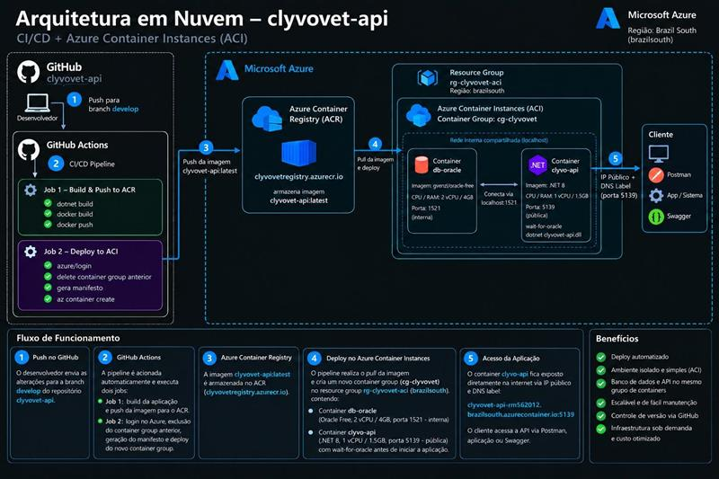

Inteligência artificial, IoT e infraestrutura em nuvem trabalhando juntas para transformar sinais do corpo do animal em cuidado clínico em tempo real.
O núcleo cognitivo da Clyvo Vet processa sinais visuais, sonoros e clínicos em tempo real, cruzando cada dado com o histórico individual do paciente através de uma arquitetura RAG (Retrieval-Augmented Generation), que fundamenta cada resposta da IA em dados reais do animal, não em conhecimento genérico do modelo.
O motor de IA roda como um serviço assíncrono independente do backend principal, recebendo perguntas do tutor pelo app, buscando contexto relevante do histórico do animal e retornando uma resposta fundamentada, por texto ou voz.
| Etapa | O que acontece |
|---|---|
| 1. Entrada | Tutor envia pergunta por texto ou áudio no app (React Native). |
| 2. Transcrição (se voz) | Whisper (OpenAI) converte o áudio em texto. |
| 3. Recuperação de contexto | ChromaDB busca no histórico do animal (consultas, medicações, sinais vitais) os trechos mais relevantes para a pergunta. |
| 4. Geração da resposta | Claude (Anthropic API) recebe a pergunta + contexto recuperado e gera uma resposta fundamentada no caso real do animal. |
| 5. Saída por voz (opcional) | ElevenLabs converte a resposta em áudio, permitindo interação por voz de ponta a ponta. |
| Componente | Tecnologia |
|---|---|
| Framework de API | FastAPI (Python 3.11+), assíncrono e de alta performance |
| Modelo de linguagem | Claude (Anthropic API) |
| Base vetorial (RAG) | ChromaDB, indexa o histórico clínico do animal para busca semântica |
| Voz | Whisper (OpenAI) para transcrição · ElevenLabs para síntese de fala |
| Validação de dados | Pydantic (schemas tipados para cada requisição/resposta) |
| Automações | APScheduler, tarefas agendadas (RPA) como monitoramento periódico e alertas |
Aplicada a feridas, postura, marcha e padrões de comportamento capturados pela câmera do tutor ou da clínica. Módulo previsto para evolução da arquitetura RAG atual.
Pipeline já implementado via Whisper (transcrição) e ElevenLabs (síntese), permitindo conversas por voz entre tutor e IA, além de análise futura de padrões sonoros do animal (latidos, respiração).
Núcleo já em produção: Claude interpreta a pergunta do tutor combinada ao histórico recuperado via RAG, gerando respostas fundamentadas em dados reais, não apenas em conhecimento geral do modelo.
Um microcontrolador dual-core com conectividade tripla coleta, processa e transmite sinais vitais do animal a cada 60 segundos, com consumo otimizado para até 12 dias de bateria.
| Especificação | Detalhe |
|---|---|
| Microcontrolador | ESP32 Dual-Core 240 MHz |
| Conectividade | Wi-Fi · BLE · LTE-M |
| Sensores | FC · SpO₂ · Temperatura · IMU |
| Autonomia | Até 12 dias contínuos |
| Proteção | IP67 · à prova d'água |
| Peso total | 38 g · confortável para uso contínuo |
Status atual: fase de aquisição de componentes e provisionamento das conexões de comunicação, com desenvolvimento técnico em andamento.
O aplicativo móvel recebe os sinais vitais em tempo real, mostra o histórico do animal e alerta tutor e veterinário no mesmo instante em que algo sai do padrão.
| Componente | Tecnologia |
|---|---|
| Framework | React Native 0.81 + Expo, multiplataforma (iOS, Android e Web) |
| Linguagem | TypeScript, com strict mode habilitado |
| Navegação | React Navigation (native-stack + bottom-tabs) |
| Autenticação | Firebase Authentication |
| Persistência local | AsyncStorage |
| Consumo de API | TanStack Query, já preparado para integração com a API real |
Frequência cardíaca, temperatura, SpO₂ e nível de atividade, atualizados continuamente.
Acompanhamento contínuo com comparação ao baseline individual do animal.
Notificações enviadas simultaneamente para o tutor e para a clínica responsável.
Relatórios exportados para o prontuário veterinário em um único toque.
A API que sustenta tutores, pets, consultas e medicações é construída em .NET 8, em Clean Architecture, com observabilidade e cobertura de testes já validadas em ambiente real de nuvem.
| Camada | Responsabilidade |
|---|---|
| Domain | Entidades e regras de negócio puras (Tutor, Pet, Consulta, Medicação), sem dependência de framework |
| Application | Casos de uso e orquestração das regras de negócio |
| Infrastructure | Acesso a dados via EF Core, integração com Oracle e serviços externos |
| Presentation | Controllers da API REST, validação de entrada e contratos HTTP |
| Recurso | Implementação |
|---|---|
| Health checks | /health/live e /health/db, verificação de disponibilidade da API e da conexão real com o Oracle |
| Logging estruturado | Serilog, com rotação diária de arquivos de log |
| Tracing distribuído | OpenTelemetry, rastreando requisições entre as camadas da aplicação |
| Testes automatizados | 46 testes (28 unitários + 18 de integração) via xUnit, Moq e WebApplicationFactory |
| Recurso | Rota base |
|---|---|
| Tutores | /api/tutors, CRUD completo |
| Pets | /api/pets, CRUD completo, vinculado ao tutor |
| Consultas | /api/consultas |
| Medicações | /api/medicacoes |
O backend central já roda 100% containerizado em nuvem, com pipeline de entrega totalmente automatizado, do commit até a aplicação funcional, sem intervenção manual.
| Camada | Tecnologia |
|---|---|
| Containerização | Docker, imagem da API .NET e do banco Oracle |
| Registro de imagens | Azure Container Registry (ACR) |
| Execução em nuvem | Azure Container Instances (ACI), arquitetura de produção validada |
| CI/CD | GitHub Actions, build, publicação da imagem e deploy automatizados a cada push |
| Backend de IA | API Python (FastAPI) hospedada no Render.com, com Firebase Firestore/Auth como backend complementar |

Fluxo completo: push na branch develop aciona o GitHub Actions, que builda
e publica a imagem no ACR, recria o container group no ACI (Oracle + API) e valida a
saúde da aplicação antes de liberar o acesso público.
A arquitetura em Azure (ACR + ACI) é a que valida a solução de produção: pipeline de CI/CD completo, containers isolados e infraestrutura provisionada via código. Ela não fica ativa 24 horas por dia neste momento do projeto para não consumir créditos de forma contínua, os recursos são recriados sob demanda, em minutos, sempre que necessário validar ou demonstrar o ambiente.
Por isso, o aplicativo do tutor consome hoje a mesma API .NET publicada de forma contínua no Render.com, garantindo que o front-end tenha um backend sempre disponível para testes e para a apresentação. Em caso de continuidade do projeto, a arquitetura Azure é a que assume como ambiente de produção definitivo.
A arquitetura atual (ACR + ACI) foi escolhida por agilidade de entrega nesta fase do projeto. Com o crescimento da base de clínicas e dispositivos, o plano de evolução prevê:
Orquestração de containers em escala, com auto-scaling horizontal conforme a demanda de clínicas conectadas simultaneamente.
Gerenciamento centralizado de toda a frota de coleiras em campo: conectividade, telemetria em massa e atualização remota de firmware (OTA).